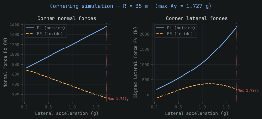
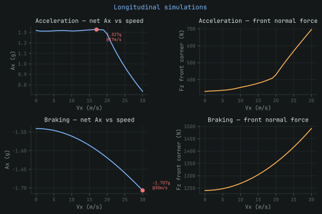
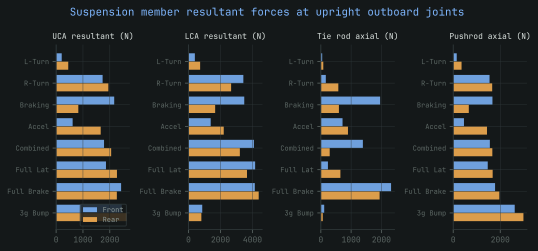
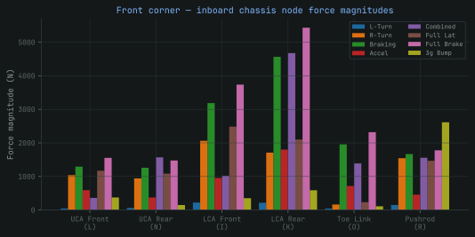

Suspension Load Analysis Pipeline
A full Python pipeline that replaced legacy MATLAB scripts — turning raw vehicle parameters into the design load cases that drive every chassis and upright structural decision.
Project Summary
- Rebuilt the legacy MATLAB workflow in Python.
- Combined a Pacejka MF5.2 tire model, equilibrium sweeps, upright statics, validation, and direct ANSYS export.
- A reproducible vehicle-load analysis pipeline.
- Eight documented design load cases for chassis and suspension FEA.
- Replaced an error-prone afternoon of manual recalculation and data entry with a parameter change and rerun.
- Produces versioned CSV inputs keyed directly to ANSYS.
Problem
Every structural decision on the car — chassis tube sizing, upright geometry, suspension mounting — ultimately traces back to a set of design loads. For years those loads came out of a set of legacy MATLAB scripts: hard to audit, harder to hand off, and slow to rerun whenever a vehicle parameter changed. Getting a fresh set of load cases after a suspension geometry change was a manual, error-prone afternoon.
The team needed a single, reproducible workflow: feed in vehicle parameters, get out a documented, versioned set of load cases that the chassis and suspension teams could build FEA around with confidence.
Pipeline Overview
The pipeline takes raw vehicle parameters — mass distribution, CG height, track, wheelbase, tire data — and turns them into the full set of design loads the structural teams need, end to end in Python rather than spread across disconnected scripts.
Tire Model
I implemented the Pacejka MF5.2 “Magic Formula” using coefficients fitted to physical tire-test data. It is an empirical model: instead of trying to derive tire behaviour from the mechanics of the rubber and carcass, it uses nonlinear equations that reproduce the measured relationship between load, slip, camber, and force.
For a given vertical load and camber angle, the model returns lateral force and self-aligning moment as functions of slip angle. A similar equation returns longitudinal force from slip ratio. This was important near the limit of the tire, where force no longer increases linearly with slip and a simple cornering-stiffness approximation would overpredict the available grip.
Design Load Cases
The first step was finding the largest wheel-centre loads the suspension would experience during cornering, braking, and acceleration. For cornering, I used a large-radius turn in the lateral simulation. At a given lateral acceleration, a larger radius requires a higher vehicle speed, which increases aerodynamic downforce and changes the vertical load available at each tire. The simulation accounts for this alongside lateral load transfer, roll-induced camber change, and the nonlinear tire response.
At each trial lateral acceleration, the program calculates the load on all four tires and uses the Pacejka model to find the forces they can produce. Vehicle sideslip and steering angle are then adjusted until the front and rear tire forces satisfy lateral equilibrium. The process continues until that equilibrium can no longer be reached within the steering and sideslip limits, giving the maximum cornering condition.
Braking and acceleration are handled with separate longitudinal simulations. These include longitudinal load transfer, aerodynamic drag and downforce, suspension movement, anti-dive or anti-squat geometry, and the longitudinal tire model. The acceleration case also checks the available motor torque and the car's 80 kW power limit. Together, these simulations produce the forces and moments acting at the wheel centre for the main design cases.


Four additional cases provide conservative structural envelopes: combined lateral and longitudinal loading, full lateral load transfer, full braking load transfer, and a 3g bump. These are analytical design bounds rather than maneuvers predicted by the pure-slip tire simulations.
Upright Statics
With the wheel-centre loads known, I could calculate how they travel through the upright and into the suspension members. I treated the upright as a rigid body in static equilibrium and used the suspension hard points from CAD to define the position and direction of each reaction force.
In the current model, the combined upper-control-arm and pushrod load path is represented by an upper reaction with three unknown components. The lower pickup point also has three force components, but its resultant must remain in the plane formed by the two lower-control-arm links. The toe link is a two-force member: its direction is fixed by the CAD geometry, so only the magnitude of its axial force is unknown.
This leaves seven unknowns. Force equilibrium supplies three equations and moment equilibrium about the wheel centre supplies another three. The final equation constrains the lower joint reaction to the control-arm plane. If nLCA is the normal to that plane, the constraint is:
I assembled the seven equations into a matrix using the applied wheel-centre loads, member directions, and moment arms calculated from the hard points:
Solving this system gives the reactions at the upper joint, lower joint, and toe link. The pipeline then resolves those reactions along the axes of the individual control-arm rods and pushrod, converting one wheel-centre load into the forces acting at each chassis pickup point. As a check, the reconstructed pickup-point forces must sum back to the original wheel load before the results are exported for structural analysis.

ANSYS FEA Export
Every load case is exported as a clean CSV, keyed directly to the ANSYS chassis FEA setup, so there's no manual re-entry step between "the pipeline computed this load" and "ANSYS is running against it." That link is also where most of the legacy MATLAB workflow's error surface used to live — a mistyped or stale value carried from a spreadsheet into FEA without anyone noticing.

Results
What used to be a manual, error-prone afternoon of MATLAB scripts is now a parameter change and a re-run. Every downstream structural decision — chassis tube sizing, upright geometry, suspension hardpoint loads — traces back to a documented, versioned load case instead of a spreadsheet nobody fully trusted.